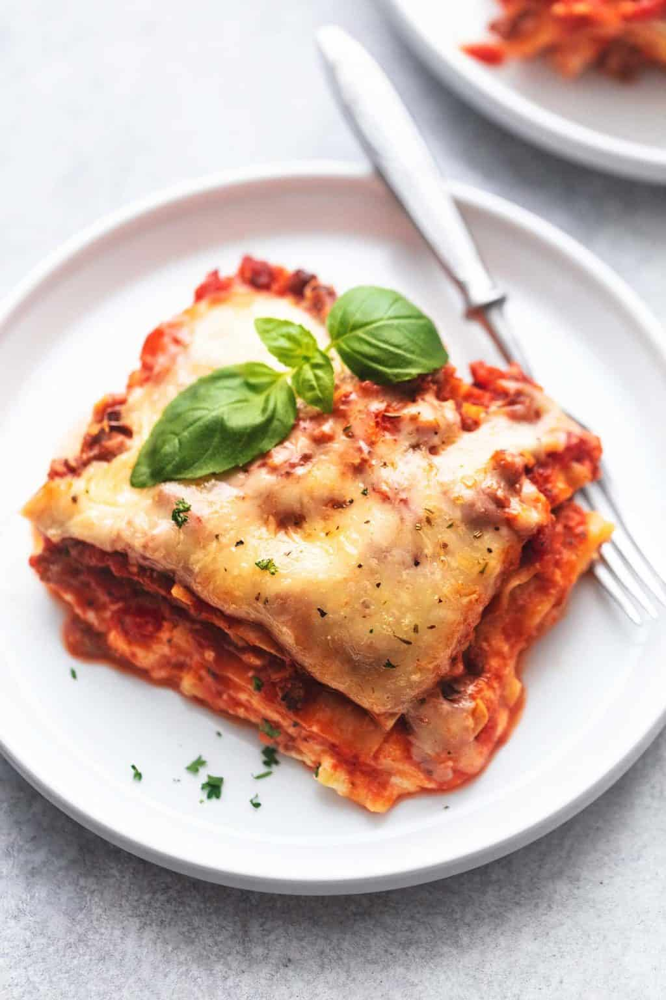

Easy Lasagna

Description
This lazy lasagna with baked ravioli is SO GOOD and so easy! It has all the flavors of traditional lasagna, but you can assemble it in less than 10 minutes!
Ingredients
- 3 packages refrigerated ravioli
- 1 jar of pasta sauce
- 3 cups mozzarella cheese
- 3 tablespoons parmesan cheese
Steps
- Preheat the oven to 400F. Spray a 9 inch by 13 inch baking dish with cooking spray.
- Spread a layer of pasta sauce over the entire bottom of the dish.
- Add a single layer of ravioli on top of the sauce. Try to cover the dish entirely.
- Add another layer of sauce, making sure the ravioli is completely covered in sauce.
- Sprinkle half the mozzarella cheese on top, covering the entire layer.
- Lay down one more layer of ravioli, again making sure you cover the entire dish.
- Spread another layer of sauce on top making sure to cover all of the ravioli.
- Sprinkle the rest of the mozzarella cheese on top, evenly covering the top.
- Finally, sprinkle parmesan cheese evenly on top. (Optional)
- Cover with aluminum foil and bake for 30 minutes at 400F.
- Remove the foil and bake for an additional 15 minutes or until the cheese is bubbly and golden.
- Remove from oven and let cool for about 10 minutes.